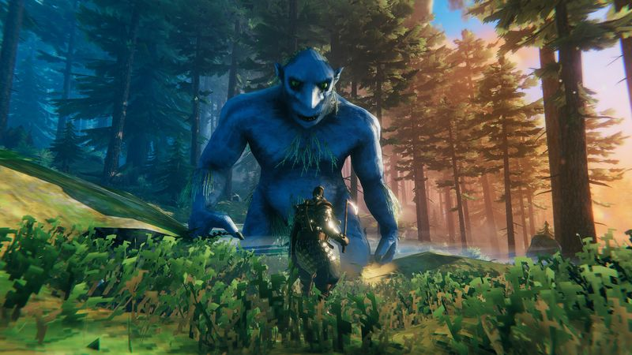
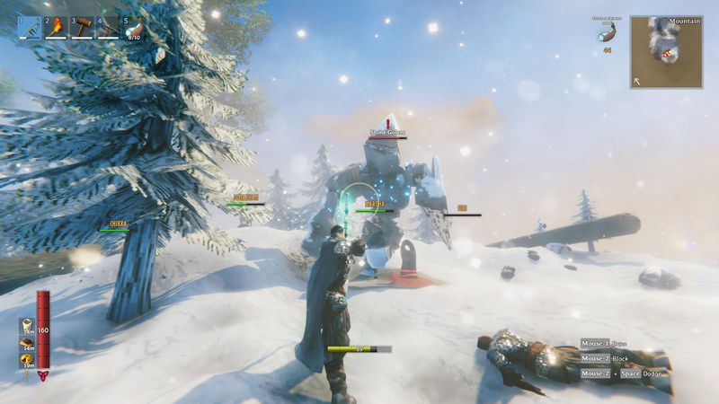

The thirty-second version
Log heavy. Vibes heavier.
My back hurts and my longship sank. Ten out of ten viking authenticity.
Valheim is a survival game with a real spine. The bosses are worth beating, the biomes are worth crossing, and the moment your first proper longhouse comes together is genuinely one of the best things we've done in a co-op game since the pandemic. It's also long. If you don't like chopping wood, do not build a viking hall in Valheim; the maths does not work in your favour.
Okay, what is this thing?
You wake up on a beach with a stick. Ten minutes later you're chopping a tree and it's peaceful. Two hours later a tree is chopping you back because you didn't notice you were logging near a troll cave, and now the troll is trundling towards your half-built hut with what can only be described as focused intent.
What makes it stick is that every biome hides one specific resource you need for the next biome, and there's no way to skip the queue. The Elder makes swamp keys. The swamp gives you iron. Iron lets you survive the mountains. It's a chain of survival puzzles disguised as a Norse camping trip, and until you build a proper Karve and start doing real trade runs across the ocean, none of it clicks.


Why it escaped the group chat
- 1-10 player co-op with procedurally generated worlds you can share between servers.
- Every biome gates a specific resource you'll need for the biome after it.
- Yes, you really do have to sail. There is no fast-travel for iron.
Three dads enter
01
Dad Who Skipped the Tutorial
The vibes are lovely right up until it wants me to be organised.
The first fifteen hours I loved. Chopping wood, building a nice porch, admiring the sunset over the ocean. Then the swamp happened, I lost my hard-won iron in a leech pond, and I put it down. The problem isn't that Valheim is hard, it's that my lunch break isn't long enough for the walk back to my corpse.
02
The Descent Guy
The tech tree is a real tree and I've already trimmed it.
I've had spreadsheets going since the second biome. I track bronze-to-iron conversion rates. I have opinions on which honey stations should be inside the walls versus behind them. Everything I love about survival games is here: real progression, gear that matters, and enough Norse mythology to keep me distracted between wood runs.
03
Normal-ish Dad
Great once a week, catastrophic every night.
The session length is honest. A build night is two hours, a boss night is three, and a sailing expedition is 'better cancel morning'. I love it and I can't play it more than weekends. If your co-op group can commit to a weekly boat, Valheim rewards you. If it can't, someone will always be five biomes behind.
Who it is for and what to watch
Invite these people
- Groups that can commit to a regular sailing night
- Anyone who's played Minecraft and thought 'this needs more Odin'
- Woodworking dads with time to spare
Dad caveats
- The swamp will find your worst weakness and press on it
- Iron logistics is a second job you did not apply for
- Corpse runs across an ocean at 2am will test friendships
Receipts
Roughly a hundred hours across a two-person weeknight server on PC, plus a shorter solo run for the early biomes. Details checked against the game's Steam listing.